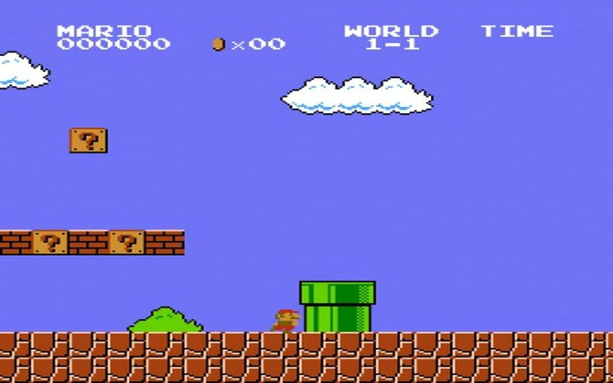

Le but de ce projet est de recréer un jeu de type "runner". C'est un projet à faire seul et nous avons le droit de choisir le thème ainsi que les fonctionnalités du jeu. Nous avions environ un mois pour réaliser ce projet. Or, étant passionné de l'océan et des pirates j'ai choisis ce thème pour mon jeu.

MAP
Pour ce projet, nous devions récupérer une map en fichier texte pour la refaire en graphique. Chaque chiffre correspondait à un sprite différent, pour exemple les '0' à un sprite sur lequel on peux marcher, les '1' à un ennemi etc... Il fallais donc codder un système permettant de réutiliser des sprites et les faire réapparaites au bon moment.
MENUS
J'ai appris à faire, pour ce projet, des menus assez poussés dont je suis fière. Tout d'abord un menu principal permettant de lancer ou quitter la partie. Il est équipé de boutons intéractifs. Ensuite un second menu où l'on peut choisir le skin de notre personnage ainsi que le niveau dans lequel on veux jouer. Nous avons aussi un menu pause que l'on peut ouvrir à tous moment lors de la partie. À partir de ce menu, nous pouvons continuer la partie, recommencer la partie ou encore quitter. Enfin, j'ai créer un dernier menu de défaite/victoire qui nous permet de quitter ou de recommencer une partie.
MOVEMENTS
Notre personnage doit avoir la capacité de faire plusieurs actions, il peut donc avancer, sauter et attaquer. Le saut permet donc d'esquiver les obstacles et l'attaque de tuer les ennemis qui se présentent devant nous.
COLLISIONS
Les collisions ont étés quelque chose d'assez complexe à faire. Il fallait vérifier quel type de sprite l'on rencontrai et donc gérer les différents types de collisions : toucher le sprite nous fait perdre de la vie, toucher le sprite nous permet de tenir dessus, toucher le sprite nous accorde un bonus etc...